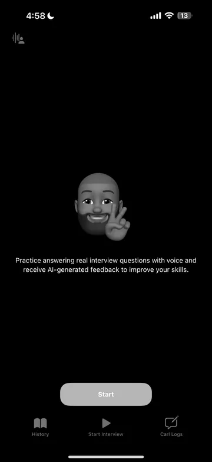
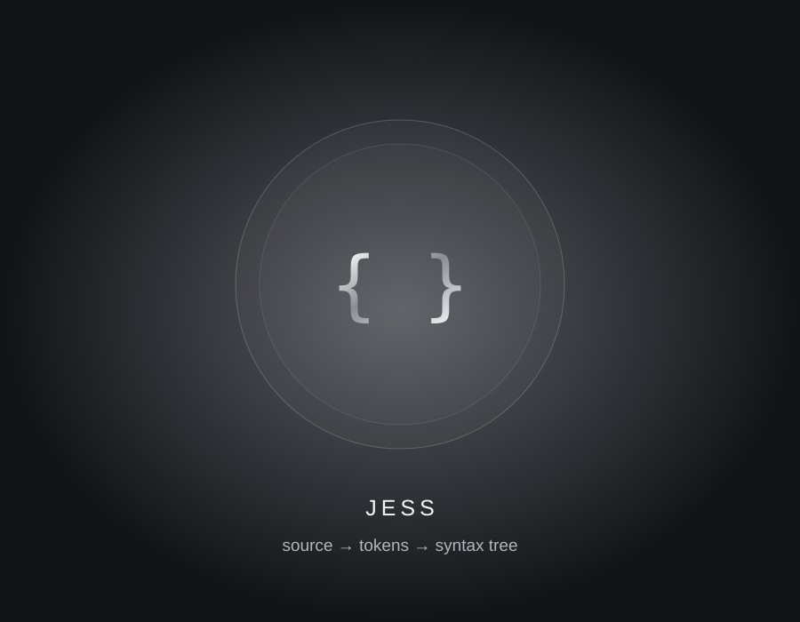
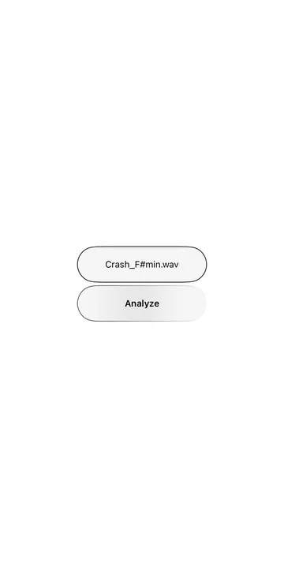
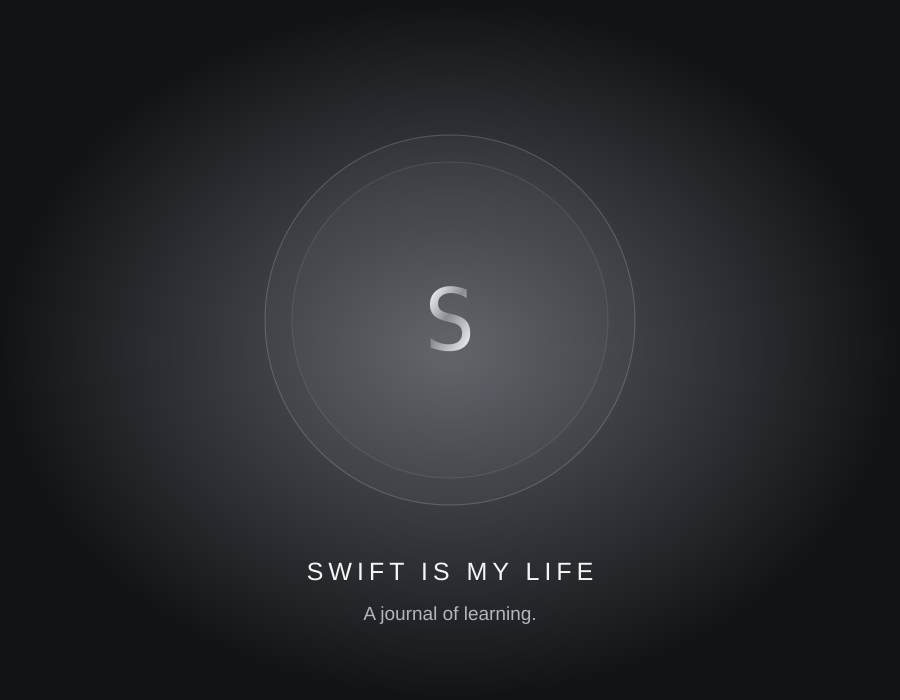
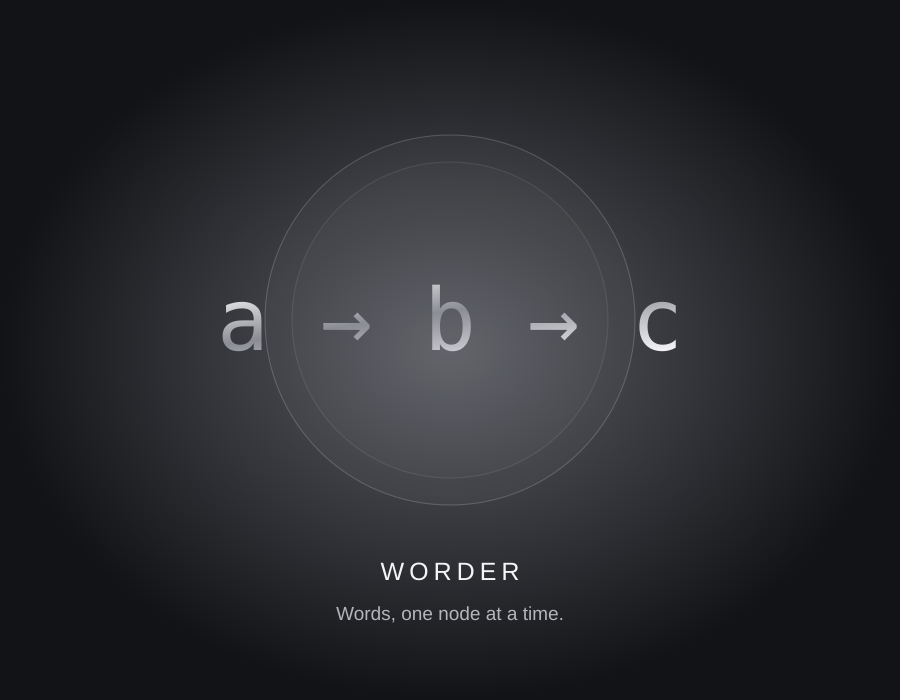
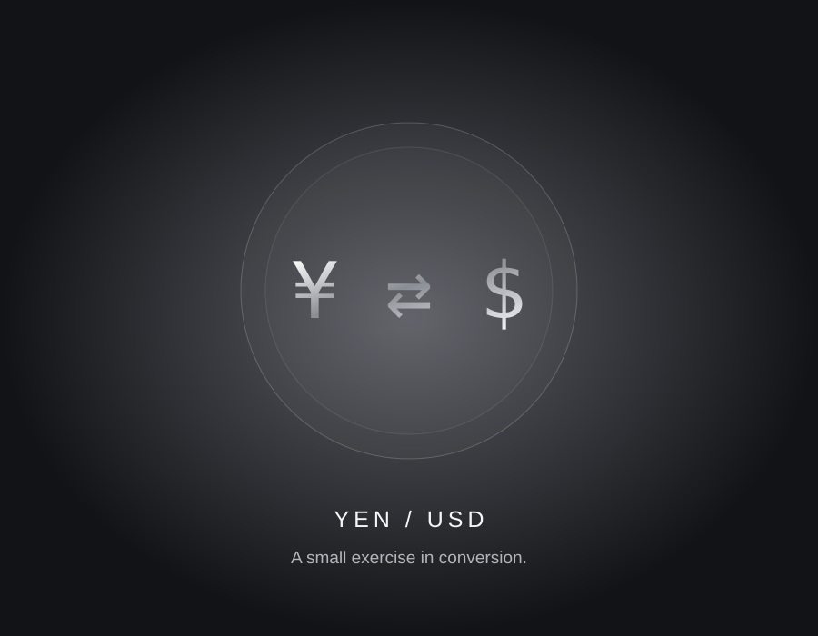

01 / iOS APPSWIFT / FIREBASE
GEMMA
Est. 30 minVoice-powered interview practice. A space to prepare, speak, and grow.
View detailsSmall experiments. Useful tools. A closer look at
the things I’m learning by building.
Estimated minutes for an initial code tour, not a full review. Your pace and familiarity may vary.

01 / iOS APPVoice-powered interview practice. A space to prepare, speak, and grow.
View details
02 / LANGUAGE LABAn interpreter built in Swift. Exploring the tools behind the tools.
View details
03 / AUDIO TOOLFind the key and tempo of a song. Music analysis, on-device.
View details
04 / LEARNING JOURNALA shared journal of Swift fundamentals, SwiftUI, and concurrency.
View details
05 / DATA STRUCTURESA simple trie implementation. Discovering how words connect.
View details
06 / EDUCATIONAL APPA small currency conversion project. Built to learn the fundamentals.
View detailsEvery project starts with a question.
Keep exploring on GitHub ↗